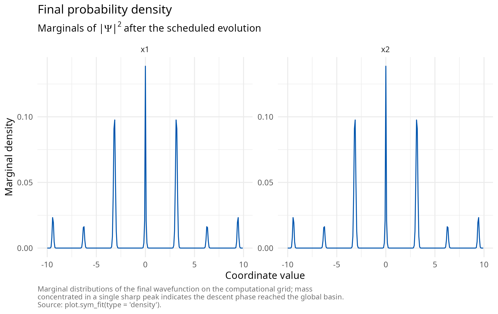
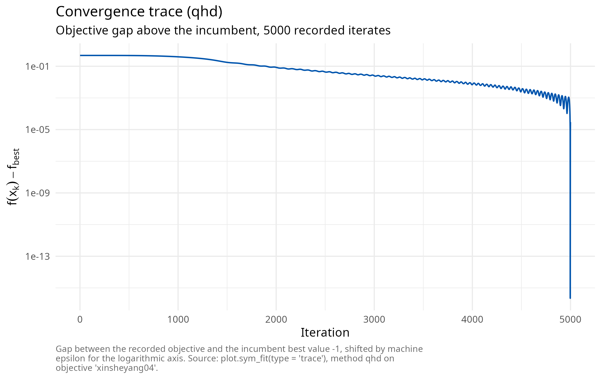
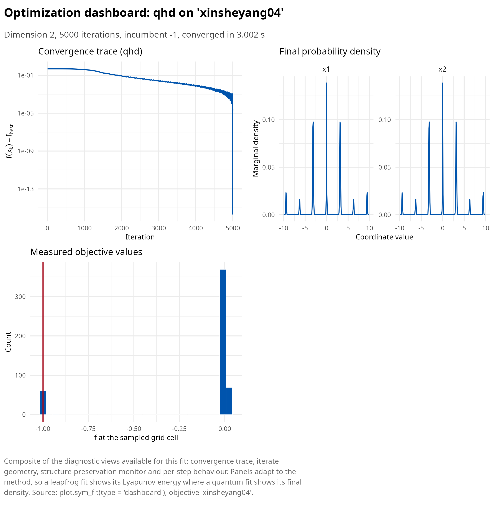
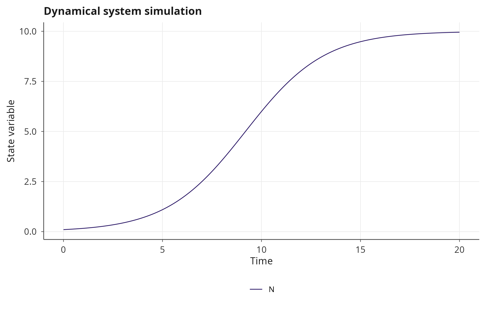
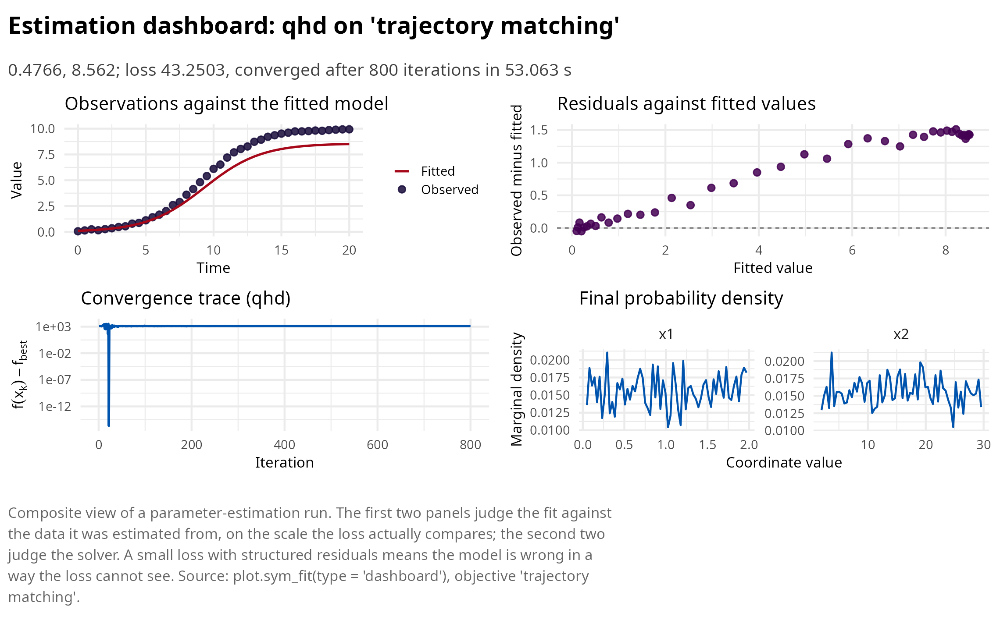
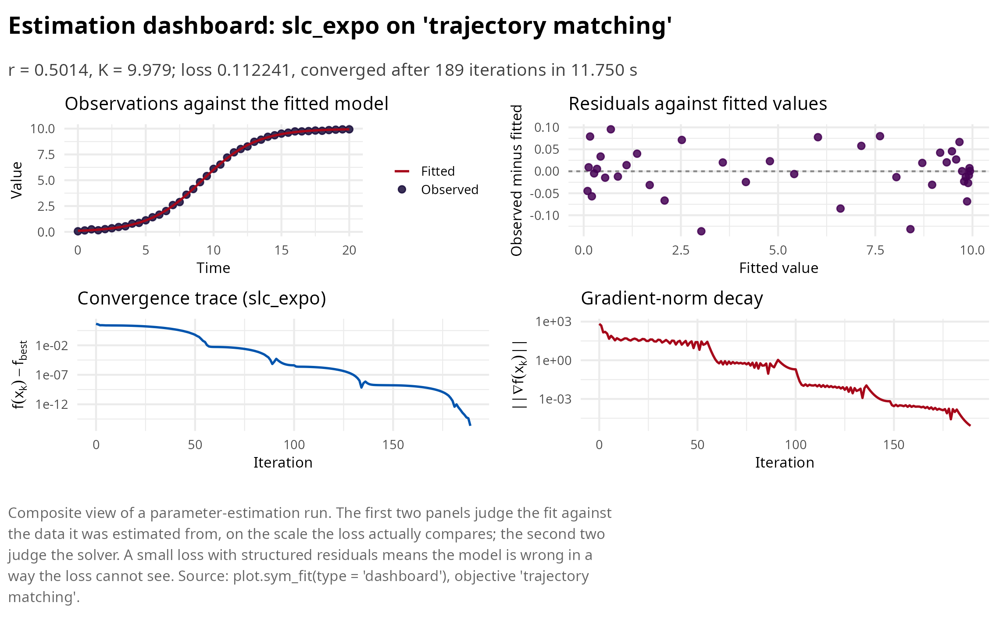

Quantum Hamiltonian descent on classical hardware
Pablo Almaraz, RElab
Source:vignettes/articles/qhd.Rmd
qhd.RmdThis article develops family C of symplectoR: a classical simulation of quantum Hamiltonian descent (QHD) following Leng, Zheng, Jia, Fan, Zhao, Peng and Wu [1]. No quantum hardware is involved anywhere: the reference paper’s own benchmark section ran entirely on a laptop CPU, because the discrete-time algorithm is a split-step Fourier integration whose quantum Fourier transform is, on classical hardware, exactly a fast Fourier transform.
From the Bregman Hamiltonian to a Schrodinger equation
Canonical quantization of the Bregman Hamiltonian replaces the momentum by \(-i \nabla\) and yields the time-dependent Schrodinger equation
\[i \, \partial_t \Psi(t, x) = \left[ \frac{1}{\lambda(t)} \left( -\tfrac12 \Delta \right) + \lambda(t) f(x) \right] \Psi(t, x),\]
with \(\lambda\) increasing in time:
early on the kinetic term dominates and the density explores the whole
box; late in the schedule the potential dominates and the density
concentrates in the deepest basin. Three schedules are implemented,
matching the paper’s variants: "cubic" (\(\lambda = t^3\), the convex-rate schedule
and the empirically strongest, the default), "expo" (\(e^{2\sqrt{\mu} t}\), strongly convex rate)
and "onethird" (\(\alpha
t^{1/3}\), the schedule of the global-convergence theorem). Two
properties matter most for practice: QHD is a zeroth-order method,
querying only function values, so non-smooth objectives are first class;
and for merely locally Lipschitz objectives the continuous dynamics
carry a rigorous global-convergence guarantee, a regime where classical
subgradient methods can fail to converge at all.
The classical simulation
The state is a complex field on an \(N^d\) grid over the periodic box; each step
applies the potential phase \(e^{-i h
\lambda(t) f(x)}\) pointwise, transforms to Fourier space,
applies the kinetic phase \(e^{-i h \|k\|^2 /
2 \lambda(t)}\), and transforms back, at cost \(O(K N^d \log N)\). The package parallelizes
the phase multiplies over grid cells with OpenMP and uses the vendored
pocketfft for the transforms; the wavefunction norm is monitored every
step and its drift, at machine precision (below 4e-15 in
all validation runs), is reported as a unitarity diagnostic. Measurement
draws seeded samples from the final density \(|\Psi|^2\), and the incumbent is the best
objective value among the sampled cells and the maximum a posteriori
cell; per-coordinate marginals of the density are returned for the
"density" plot view.
library(symplectoR)
bm <- sym_benchmark("xinsheyang04")
fit <- sym_optim(sym_objective(bm), method = "qhd", seed = 42,
control = sym_control("qhd", N_grid = 256, K = 5000, T_evol = 10,
n_samples = 500))
print(fit)
#> ¡ symplectoR fit (qhd)
#> ⚙ Objective: xinsheyang04 (dimension 2)
#> ✔ Best value: -1 after 5000 iterations
#> ✔ Status: Converged
#> ¡ Evaluations: 65536 objective, 0 gradient
#> ⏱ Wall time: 3.002 s
plot(fit, type = "density")
plot(fit, type = "trace")
The composite view shows all four quantum diagnostics together: the expected-objective trace, the marginals of the final density, and the empirical distribution of the measured objective values against the retained incumbent.
plot(fit, type = "dashboard")
The benchmark suite and what validation shows
The 12 non-smooth, non-convex test functions of the reference paper
ship as benchmarks with their published domains and global minima
(sym_benchmark_suite()); the package verified every entry
against its stated optimum, and the verification caught one internal
inconsistency in the source: for the Keane function the paper’s printed
minimizer evaluates to -0.36498 under its own printed
formula, while the true minimum of that formula on the closed box,
located on the boundary at the root of \(\tan
x_1 = 4 x_1\) and confirmed by scan and constrained refinement,
is -0.673668; the shipped ground truth records the
corrected value.
In the package’s validation runs at grid 256 and 5000 steps, QHD
recovered the exact global minimizer of xinsheyang04 and
wf (gap 0), landed on one of the four symmetric global
minimizers of carromtable, and exhibited on
ackley precisely the resolution floor the paper documents:
the sharp cusp cannot be located more accurately than the grid spacing,
so the gap stalls near 0.4 at that resolution. The floor is
fundamental, not a bug: refining it costs \(N^d\) memory, which is also why the engine
enforces d at most 3 and a cell cap with an explicit memory
estimate in the error message.
The intended division of labor
QHD’s niche in the package is the global stage of inverse problems
with at most three free parameters: it maps the entire likelihood box,
is immune to multimodality and non-smoothness, and its incumbent is then
refined by a trajectory method. In the shipped logistic-growth
validation the pipeline runs QHD to its grid floor and hands over to
slc_expo, which converges in 185 iterations to the
noise-floor optimum, matching an L-BFGS-B reference to five
decimals.
sp <- janos::system_spec(
rhs = function(t, y, p) c(p$r * y[1] * (1 - y[1] / p$K)),
state_names = "N", parms = list(r = 0.5, K = 10), init = c(N = 0.1)
)
sim <- janos::dyn_sim(sp, t_max = 20, parms = list(r = 0.5, K = 10),
discard_transient = 0, verbose = FALSE)
plot(sim)
set.seed(2)
idx <- seq(1, nrow(sim$trajectory), by = 5)
observed_df <- data.frame(time = sim$trajectory$time[idx],
N = sim$trajectory$N[idx] + rnorm(length(idx), sd = 0.05))
obj_inv <- sym_inverse(sp, data = observed_df,
theta_bounds = list(lo = c(r = 0.05, K = 2), hi = c(r = 2, K = 30)))
global <- sym_optim(obj_inv, method = "qhd", seed = 1,
control = sym_control("qhd", N_grid = 64, K = 800))
plot(global, type="dashboard")
refined <- sym_optim(obj_inv, x0 = global$x_best, method = "slc_expo",
control = sym_control("slc_expo", C = 0.1, h = 2, max_iter = 1200, tol_grad = 1e-5))
summary(refined)
#> ¡ symplectoR fit (slc_expo)
#> ⚙ Objective: trajectory matching (dimension 2)
#> ✔ Best value: 0.112241 after 189 iterations
#> ✔ Status: Converged
#> ¡ Evaluations: 951 objective, 190 gradient
#> ⏱ Wall time: 11.750 s
#>
#> Incumbent coordinates:
#> ✔ r = 0.501446
#> ✔ K = 9.97868
#> ⚠ Final gradient norm: 8.15e-06
#> ¡ Objective drop over the last 10 recorded iterates: 1.22e-11
#> ⚙ Momentum restarts: 47; temporal loop events: 6
plot(refined, type="dashboard")
References
[1] Leng, J., Zheng, Y., Jia, Z., Fan, L., Zhao, C., Peng, Y., & Wu, X. (2025). Quantum Hamiltonian descent for non-smooth optimization. arXiv preprint arXiv:2503.15878. https://doi.org/10.48550/arXiv.2503.15878